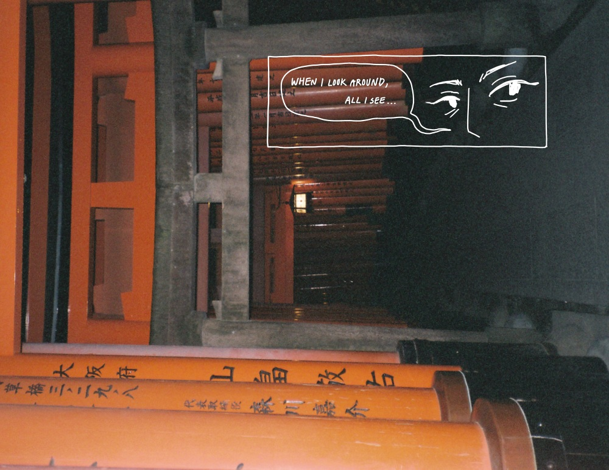
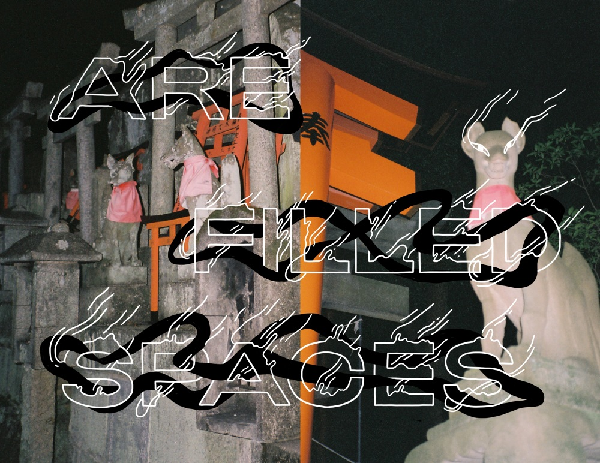

UNTITLED PHOTO ZINE
a zine for personal creative exploration, in which i am publisher, photographer, and artist.


THE CAMERA
a few years back, i learned there was still an avid film photography community. i did a little research, went on ebay, and got myself an unassuming 35mm point and shoot camera: my yashica t3. it sort of resembles a brick, makes a distinct whirring sound whenever i take a picture, and my first roll came out blurry and unfocused (in a bad way!). i loved it. i loved its bluntness and unfussy nature, and how it feels almost like an extension of my mind's eye. i now carry it with me wherever i think inspiration will strike.
THE ZINE
is a compilation of my film photography and corresponding art. though i think the photos stand strong on their own, this zine is a completely unrestricted space i am creating for myself to explore my own headspace, my own styles, and to be unafraid to push my own boundaries. i'm following a theme in my photos to establish a basic storyline: chaos to tranquility, finding peace in a wreck of a mind.